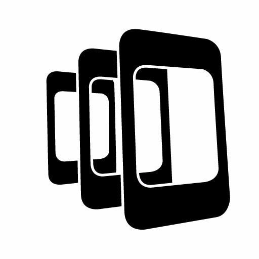
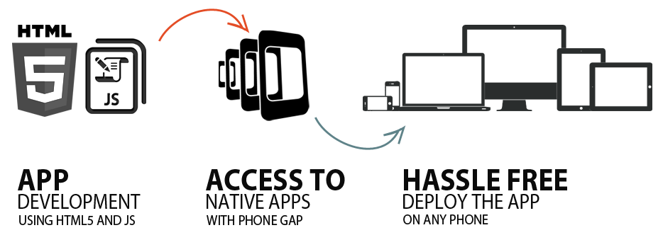
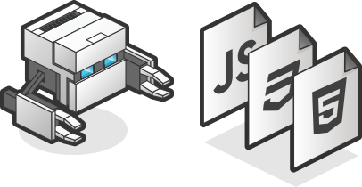

PhoneGap

Moises Meneses - Mayo 2016
Historia
Desarrollado por primera vez en un evento iPhoneDevCamp en San Francisco , PhoneGap pasó a ganar el Premio del Público en la Conferencia de 2009 Web 2.0 de O'Reilly Media , y el marco se ha utilizado para desarrollar muchas aplicaciones . de Apple Inc. ha confirmado que el marco tiene su aprobación, incluso con los nuevos cambios del contrato de licencia 4.0 para desarrolladores. el marco PhoneGap es utilizado por varias plataformas de aplicaciones móviles tales como Monaca de ASIAL , appMobi , Convertigo , ViziApps , y la luz de trabajo como la columna vertebral de su motor de desarrollo de cliente móvil .
Moises Meneses - Mayo 2016
¿Qué es PhoneGap?

PhoneGap es un framework para el desarrollo de aplicaciones móviles producido por Nitobi, y comprado posteriormente por Adobe Systems. Principalmente, PhoneGap permite a los programadores desarrollar aplicaciones para dispositivos móviles utilizando herramientas genéricas tales como JavaScript, HTML5 y CSS3. Las aplicaciones resultantes son híbridas, es decir que no son realmente aplicaciones nativas al dispositivo (ya que el renderizado se realiza mediante vistas web y no con interfaces gráficas específicas de cada sistema), pero no se tratan tampoco de aplicaciones web (teniendo en cuenta que son aplicaciones que son empaquetadas para poder ser desplegadas en el dispositivo incluso trabajando con el API del sistema nativo).
Moises Meneses - Mayo 2016
Características

Este framework permite a los desarrolladores web centrarse en el desarrollo de apps para teléfonos inteligentes de distintas plataformas, teniendo como base un código genérico con herramientas tales como JavaScript, HTML, CSS, y creando una interfaz de funciones foráneas para embeber una vista Web en el dispositivo móvil.
Moises Meneses - Mayo 2016